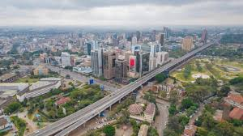

Mackin Barasa | WDD 130
Hello, my name is Mackin Barasa. I am Kenyan from Nairobi and I am currently a student at BYU-Idaho studying web development.
Nairobi
Nairobi is the capital city of Kenya. The city has a National Park, the only kind in the world. It is known for breeding endangered black rhinos and home to giraffes, zebras, and lions. Next to it is a well-regarded elephant orphanage. Nairobi is also often used as a connecting point for safari trips elsewhere in Kenya.